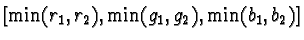

Usually layers are opaque, which means that upper layers cover and visually block lower ones. Blending modes change this behavior and allow some color features of a layer to be combined with the colors of layers below it. Blending modes can also be used to affect how color from a painting tool combines with the layer the paint is applied to.
Figure 5.11(a)
The different blending modes are described in this section, and their practical uses and applications are described in the next. The GIMP has 16 different blending modes. They are listed in the following five logical groups:
In the following descriptions of the blending modes, the pixels of the upper layer (or of the applied paint) are referred to as the foreground pixels and those of the lower layer or layers as the background pixels. The notations F and B are used to represent their respective values. Blending the foreground pixel value F with the background value B yields the resultant pixel value R.
Normal, Dissolve, and Behind are pseudo-blending modes because they don't really combine the foreground and background pixel values of the image.
Normal mode is the default GIMP behavior where the foreground pixels are visible and the background pixels are not. Of course, this can be changed by adjusting the opacity slider in the Layers dialog (more on opacity and transparency is discussed in Section 5.7).
Dissolve mode works by allowing a percentage of background pixels to be seen through the foreground. It does this by making some parts of the foreground partially transparent and the rest fully transparent. These two sets are intermingled in a random way. For the Dissolve mode to have an effect, the foreground layer must have an alpha channel with values less than 255. The alpha channel for a layer can be modified with a layer mask. The details of working with layer masks are discussed in Section 4.2.
Figure 5.12
Figure 5.12(b) shows the result of the Dissolve blending mode. Due to the value of the foreground's alpha channel the result is that 75% of the white pixels are 75% opaque and 25% are fully opaque. The details of the effect can be more clearly seen in the small region framed by the black box shown in Figure 5.12(b). This region is zoomed 900% and redisplayed in Figure 5.12(c), which makes the relationship of the red and white pixels more apparent.
Unlike all the other blend modes in the GIMP, the Behind mode
only works with painting tools. It is not available as a blending
mode for layers. To understand how it works, imagine a pane of glass
that has something painted on the front surface but there are some
parts of the pane that are bare, or have only a partially transparent
paint on it. Painting on the back surface of the pane lets the color
from this new paint show through to the front wherever the front is
not fully opaque. Figure 5.13
In Figure 5.13(a), a single-layer image with a centered red circle is displayed. The rest of the layer is transparent. The Brush Selection dialog, shown in Figure 5.13(b), has been used to choose a large, hard brush and to set the blending mode to Behind. The figure shows the result of painting a bright green stripe, using the Paintbrush tool, through the red circle. In Behind mode, however, the green is only seen through the transparent parts of the layer. This mode only works for layers with alpha channels.
Addition, Subtract, and Difference are blending
modes that add and subtract foreground and background pixel values in
RGB colorspace. Figure 5.14
The Addition blending mode works as follows. Given a foreground and background pixel, represented by the RGB vectors F=[r1,g1,b1]and B=[r2,g2,b2], the pixel obtained from the Addition blending mode is R=F+B=[r1+r2,g1+g2,b1+b2]. Thus, in Figure 5.14(a), the two blue arrows represent a foreground and background pixel, and the red arrow is the vector sum of the two. Addition always produces a resultant color that is as light or lighter than either the foreground or background colors. This is because the vector sum must have a projection onto the neutral axis that is closer to white than the projection for either the background or foreground colors.
In the event that the vector sum produces a result outside of the
color cube (that is, by producing any RGB component greater than 255),
its value is clipped to the surface of the cube. The equation
describing the Addition blending mode is
Cyan, magenta, and yellow are the sums of green and blue, red and blue, and red and green, respectively. Thus, cyan, magenta, and yellow appear lighter than red, green, or blue because they project higher up onto the neutral axis. Furthermore, any of these secondary colors (cyan, magenta, yellow) summed with the complementary primary color (red, green, blue) produces white, the lightest color of all.
Figure 5.15
Figure 5.15(a) shows the flower image for the Normal blending mode. Figure 5.15(c) shows the same image when the blending mode of the upper layer is changed to Addition. This has the effect of adding 127R 127G 127B to every pixel in the flower layer, which lightens the entire image considerably. In fact, some parts of the image are completely blown out to white.
The effect of the Subtract blending mode is illustrated in Figure 5.14(b). This blending mode works as follows. Given a foreground and background pixel, we'll again represent each as an RGB vector F=[r1,g1,b1] and B=[r2,g2,b2]. The pixel obtained from the Subtract blending mode is R=B-F=[r2-r1,g2-g1,b2-b1]. Thus, for the two blue arrows labeled F and B in Figure 5.14(b), the result of subtracting the foreground from the background is given by the red arrow labeled R.
Unlike the Addition blending mode, Subtract is not
symmetrical (that is, subtracting F from B is not the same as
subtracting B from F). The result of subtracting the foreground
from the background can produce negative values. If a component of
the resulting RGB vector is less than zero, it is clipped to the
surface of the cube. Thus, the equation representing the Subtract blending mode is
The Difference blending mode is like Subtract, but the
result is symmetrical between the foreground and the background. Difference is symmetrical because it applies an absolute value to the
difference of the foreground and background values. Thus, if one of
the RGB components is negative after subtraction, its sign is reversed
to make it positive. The resulting mathematical expression for the
Difference blending mode is
Figure 5.16
Multiply, Divide, Screen, and Overlay are all multiplicative blending modes. The resulting pixel values are the product or a function of the product of the foreground and background pixels.
The actions of the Multiply and Screen modes on pixels
represented in the RGB cube are illustrated in
Figure 5.17.
Due to the scale factor of 255, the component values of one RGB vector are normalized to the range [0,1]. Thus, R is component-wise smaller than either F or B. From previous discussions, you know that smaller means darker because the projection onto the neutral axis is closer to the origin. This is illustrated in Figure 5.17(a) which shows two blue arrows representing the foreground and background pixel positions and a red arrow representing the component-wise product.
Figure 5.18(a)
For a foreground pixel whose position in the RGB cube is [r1,g1,b1] and a background pixel whose position is [r2,g2,b2], you might imagine that the resultant pixel for the Divide blending mode would be analogous to that for the Multiply mode. This would suggest something like [255r2/r1,255g2/g1,255b2/b1]. However, this expression presents two problems. The first problem is that when the foreground pixel has a zero component, the result is not defined; the second problem is that when the foreground pixel value is small, the result can be so large that it is no longer inside the RGB cube. The first problem is solved by adding one to each component of the foreground pixel. This prevents a division by zero. The second problem is solved by clipping values that are too large to the surface of the cube.
A succinct expression for the Divide mode is
The Screen blending mode has a lightening effect that is exactly
analogous to the darkening effect created by Multiply. This
concept is illustrated in Figure 5.17(b). As
shown in the figure Screen mode redefines the origin to be
255R 255G 255B, the white point in the cube. Thus, the vectors
to the foreground and background pixels are as shown by the two blue
arrows in Figure 5.17(b). Screen then
multiplies the two vectors, producing a resultant shown as a red arrow
in Figure 5.17(b). As with the Multiply
mode, the resulting vector of the Screen mode is shorter than
either the foreground or background vectors--but with respect to
the white point in the cube. Thus, the resulting vector is closer to
the white point, and, consequently, lighter than either the foreground
or background colors. The mathematical expression for Screen
mode is
Figure 5.18(c) illustrates an example of applying the Screen mode to the flower image from Figure 5.15(a). As predicted, the result is everywhere brighter than in the original image of the flower. Also notice that unlike Divide, Screen mode does not blow out to white. Thus, although both Divide and Screen have similar lightening characteristics, they have very different personalities.
Finally, the Overlay mode is a combination of both Multiply and Screen. The equation for overlay mode is
Thus, if the background is dark (that is, has an RGB value close to zero in all three components), the result of Multiply mode will dominate and the result of Screen mode will be suppressed. The opposite is true if the background pixel is light (that is, has an RGB value close to white in all three components). Overall, Overlay mode tends to make an image darker where it is already dark and lighter where it is already light. Figure 5.18(d) illustrates an example of applying Overlay mode to the flower image from Figure 5.15(a).
Darken Only creates a resultant pixel that retains the smallest
components of the foreground and background pixels. Thus, if the
foreground pixel has the components
[r1,g1,b1] and the background
has
[r2,g2,b2], the resultant pixel is
.
This is expressed more
compactly as
Figure 5.19(a)
Lighten Only mode has the opposite action of Darken Only.
It selects the maximum of each component from the foreground and
background pixels. The mathematical expression for Lighten Only
is
Figure 5.19(b) illustrates the use of Lighten Only mode on the flower image from Figure 5.15(a). Now, everything in the flower that has an RGB component lighter than 127 retains its character in the image. The parts of the flower image that are darker are replaced by the flat gray.
The Hue, Saturation, Value, and Color blending modes all work similarly. For each mode, one HSV component is taken from the foreground pixel and the other two components from the background pixel. For example, if the Hue blending mode is chosen, the result is the hue of the foreground pixels combined with the saturation and value of the background pixels. The same process is used for the Saturation and Value blending modes. The Color blending mode, however, is slightly different. For this mode, the hue and saturation of the foreground pixels are used in conjunction with the lightness of the background pixels. Lightness, defined in Section 5.3, is less bright than value, and is simultaneously more true to the human perception of brightness.
Thus, the action of the Hue blending mode can be expressed as
Similar to Hue, the Saturation blending mode produces
resultant pixels that are a combination of the saturation of the
foreground and the hue and value of the background. The expression
for this is
The Value blending mode produces resultant pixels that are a
combination of the value of the foreground and the hue and saturation
of the background. The expression for this is
The final example in this section illustrates the Color blending
mode. This mode combines the foreground hue and saturation with the
background lightness. Lightness was defined earlier in
Section 5.3; lightness is always a bit less
bright than value. The expression for this blending mode is